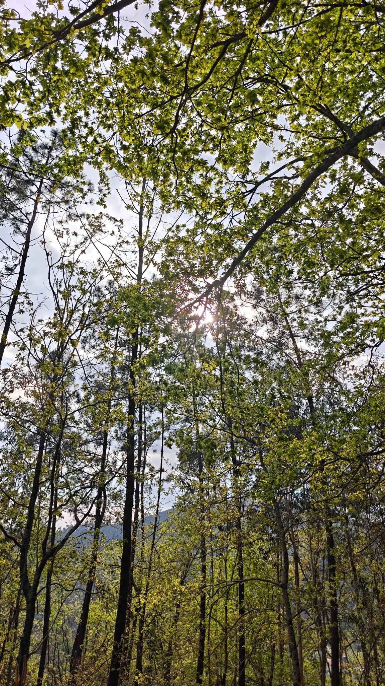
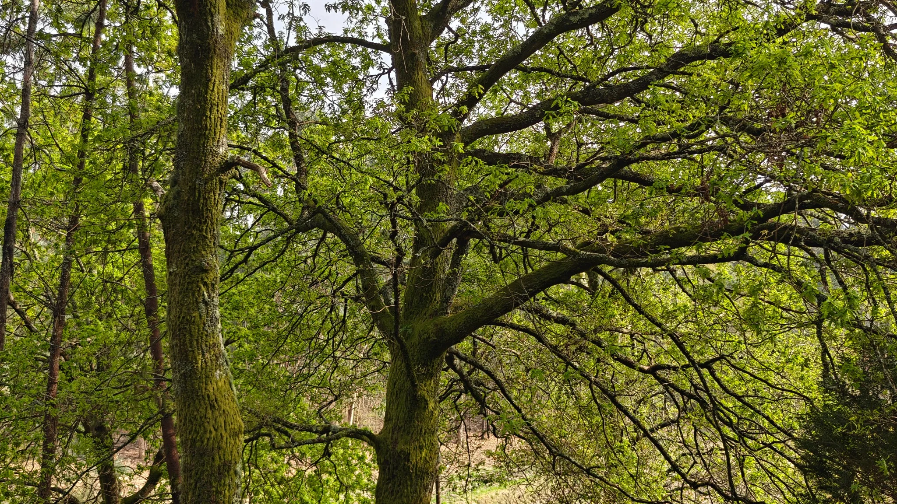
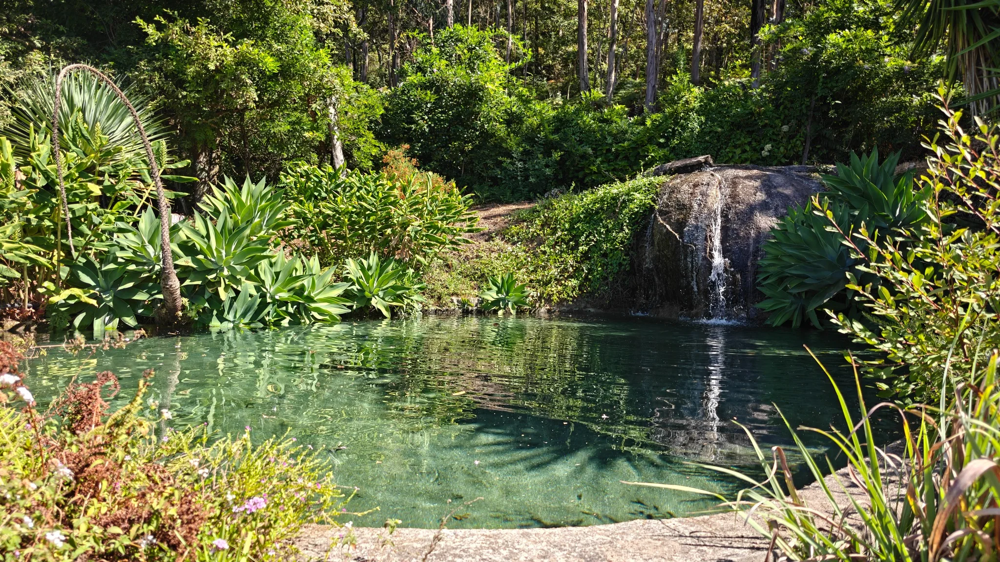
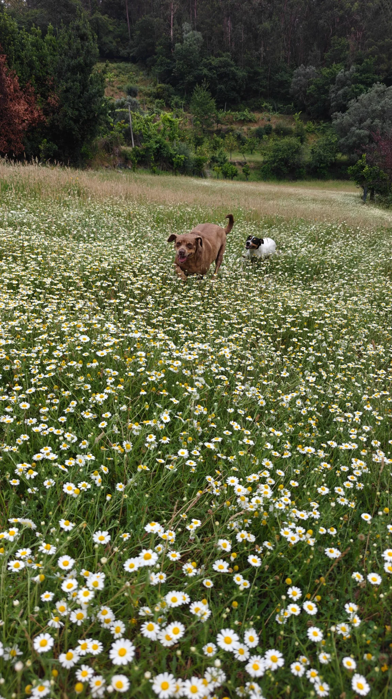
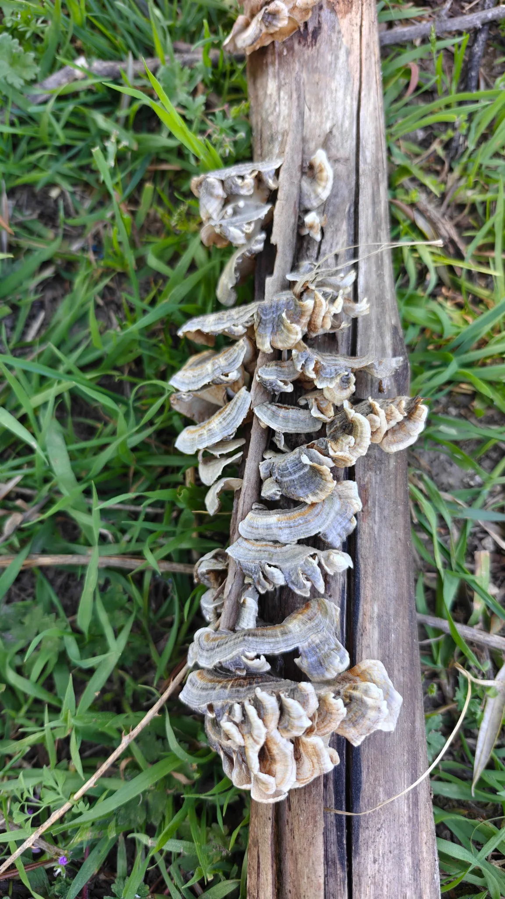
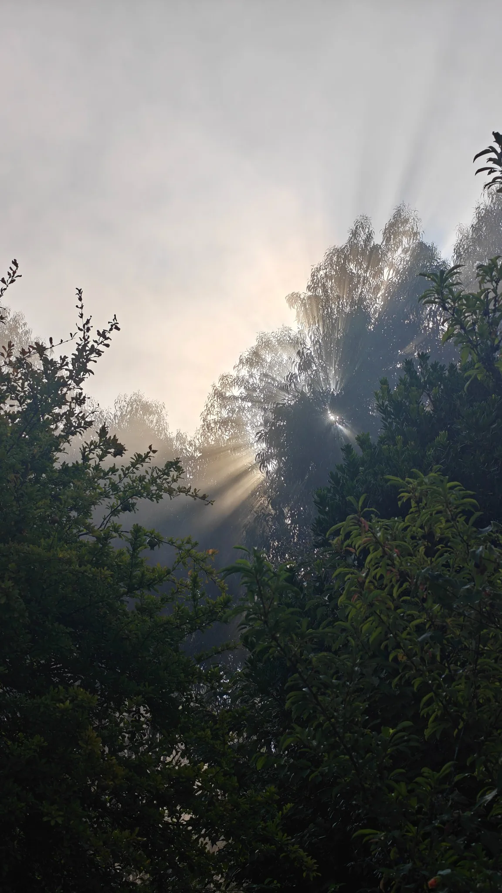
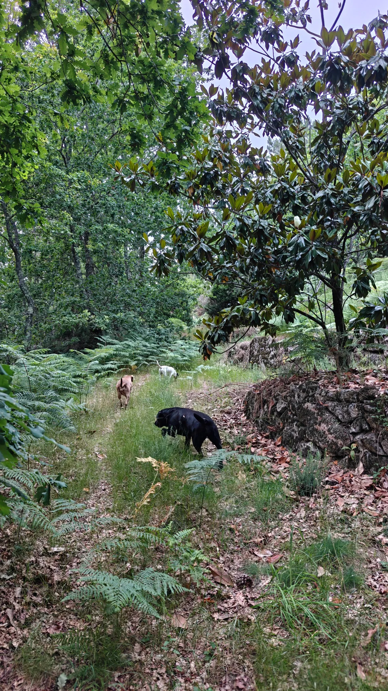
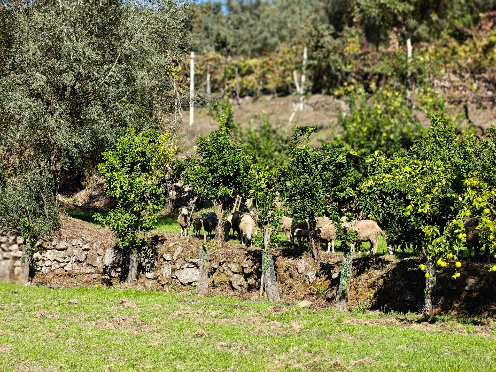
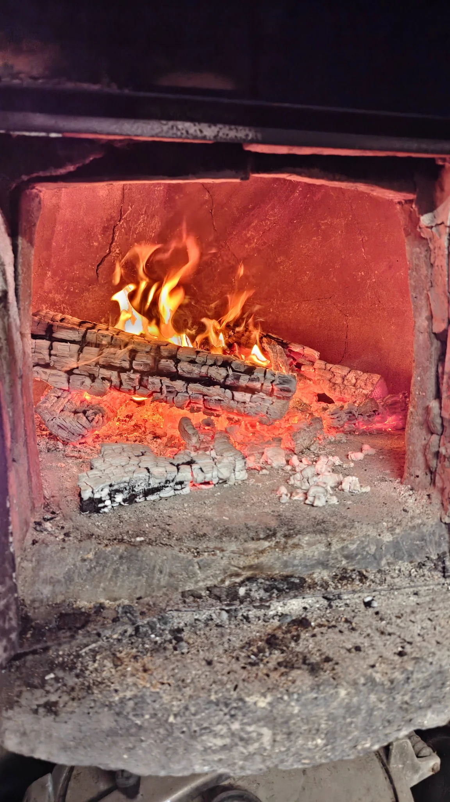

Restore
Support native woodland, healthier soils and the natural movement of water across the land.
Vila Verde · Northern Portugal
A mountain retreat shaped by the valley — a place for stillness, movement, seasons and a deeper relationship with the land.
Discover the valleyA place, not a product
ORIZ NEXUS is being imagined from the landscape outward: mountain air, running water, stone, woodland, cultivated ground and long views across the Minho. The ambition is simple — to create a rare place to stay without overwhelming the character that makes the valley worth coming to.


The idea
Less escape. More return.
To sleep deeply. Walk far. Eat locally. Read slowly. Hear weather arrive. Leave with more attention than you came with.
Valley stewardship
Support native woodland, healthier soils and the natural movement of water across the land.
Build with restraint, preserving views, darkness, silence and the small-scale texture of the valley.
Work with local growers, makers, craftspeople and knowledge wherever the place allows it.
Treat biodiversity, water, soil and landscape quality as things to notice, understand and improve season after season.




The rhythm
Coffee outside. Mist lifting from the slope.
Trail, bike, swim, stretch — or nowhere at all.
A long table. Seasonal food. No rush.
Read, wander, sleep, listen to rain.
Firelight, stars, quiet conversation.



Contact
ORIZ NEXUS is still taking shape. For enquiries about the place, the landscape and what comes next, get in touch.
jp@quintacompra.com ↗Quinta da Compra · Minho, Portugal
A place in the making
This is an early glimpse of the place and the principles behind it. More will be revealed as the landscape, architecture and seasons come together.
Return to the valley↑